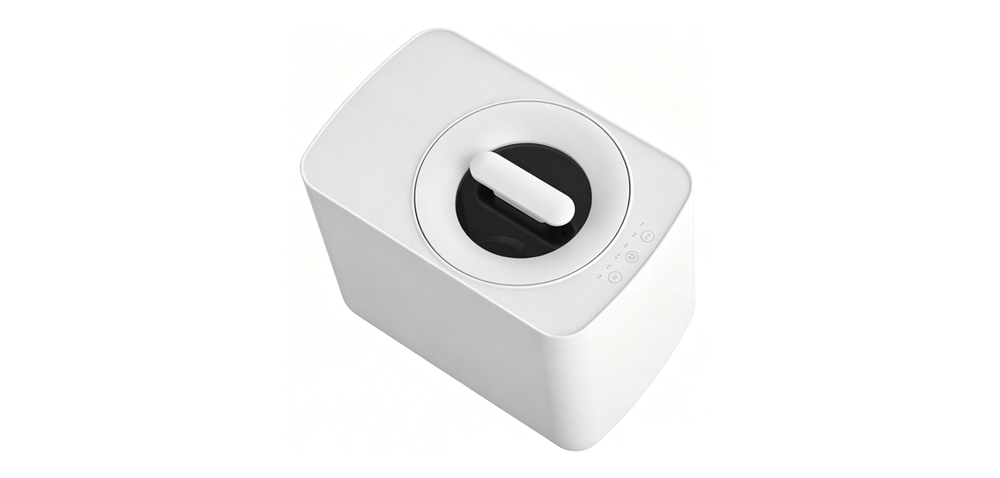
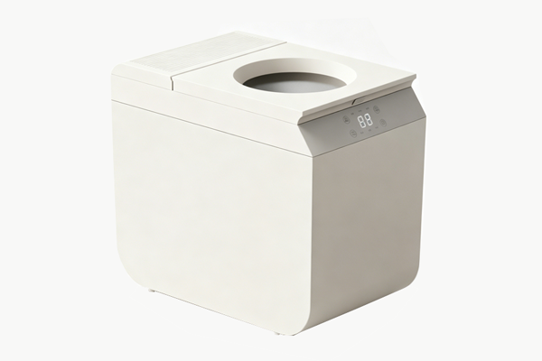

Our Best Sellers

25+ Electric Kitchen Composter Models · 5 Capacity Series
3L
BEST SELLER
SHL-25C/D/E · JH25A
3L capacity, 24V brushless, KR/JP/TWN certified. Ideal for mid-large families.

4.8L
SHL-24E / SHL-23E
Visible window, ≤45dB, dual-voltage (100-240V). Perfect for US/KR markets.

5.5L
FLAGSHIP
SHL-25A/B · JH26A
Ultra-quiet ≤35dB, large capacity, multi-market certification. Premium B2B choice.